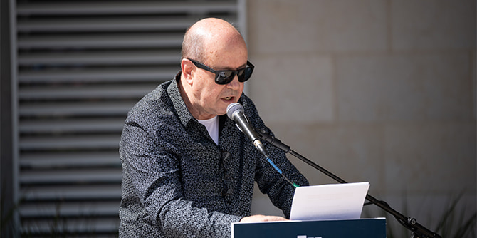
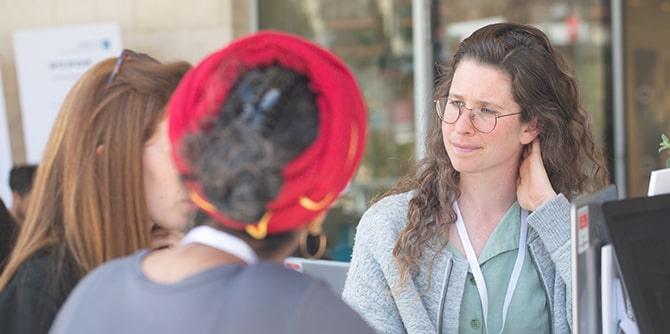
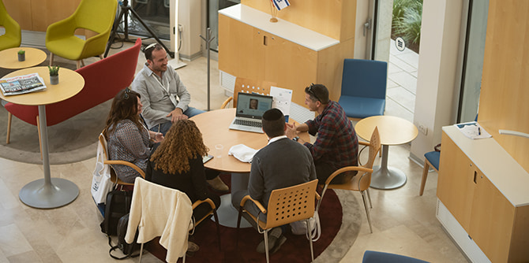
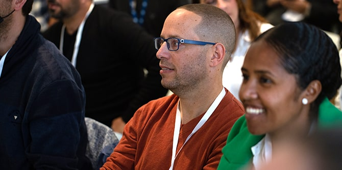
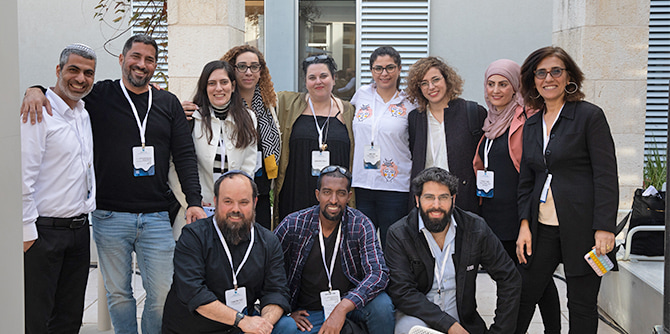
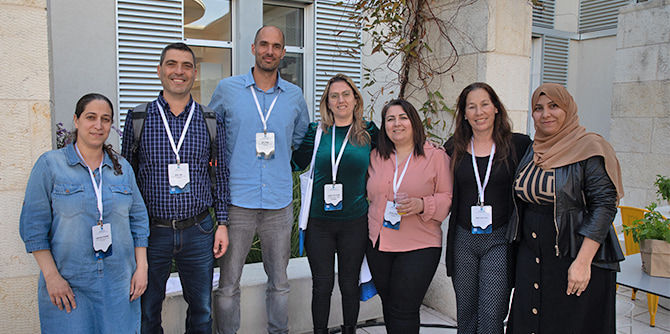
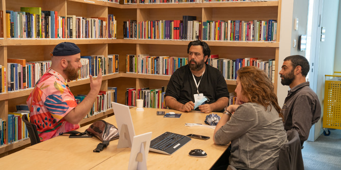

"המטרה העיקרית של יום העמיתה והעמית היא יום לימוד משותף שיראה לכל אחת ואחד מאיתנו שאנחנו חלק ממשהו גדול ומשמעותי", אמר בפתיחת היום מנכ"ל קרן מנדל-ישראל משה ויגדור. ואכן, יום העמיתה והעמית – המפגיש את כל עמיתות ועמיתי מנדל, מכל התוכניות ומכל היחידות – הוא אירוע ייחודי בלוח השנה המנדלי, ויוצר עבורם מרחב ייחודי להיכרות עם הקרן, עם עשייתה ועם מטרותיה. כמו כן הוא מאפשר, באמצעות חוויית למידה משותפת, התחלה של יצירת שותפויות וחיזוק קהילת מנדל: עמיתים ועמיתות מכל היחידות ומכל התוכניות.

יום העמיתה והעמית השנה עמד בסימן ״לוקליות״, ועסק במנהיגות כפי שהיא משתקפת דרך הפריזמות השונות של תוכניות הקרן ובפרשנויות השונות המוענקות לה במרחבי ההשפעה של כל אחת מהן. נקודת המבט התמקדה הן במרחבים הלוקליים – הפיזיים והמטאפוריים: הגאוגרפיים, התרבותיים, התפיסתיים והערכיים – והן במבט-על: בשאלות המנהיגות הגדולות המעסיקות כל אחד ואחת מהעמיתים והעמיתות בתוכניות מנדל.
לאחר התכנסות ופעילות היכרות התפצלו כ-300 המשתתפים לקבוצות למידה קטנות המורכבות מעמיתים ומעמיתות מתוכניות שונות, לדיון על טקסטים מכוננים – פרוזה ושירה – בהם גם קטע מספרו של מורטון מנדל הסוד טמון באנשים.

אחר כך התקיימו שלושה מופעים במקביל, לבחירת המשתתפים: יצירות אמנות העוסקות בשאלות ובמתחים שונים, ומשקפות אתגרים פיזיים, פסיכולוגיים, גאוגרפיים וחברתיים בישראל:
- הראפר טדי נגוסה: "זה בדם שלי", שאירח את המוזיקאים איתמר ציגלר ודי ג'יי סמיילי
- אנסמבל גלית ליס: במופע ״כחולות״ – איך רוקד הגוף המתבגר-המזדקן?
- זיו יחזקאל: שירה בליווי פסנתר מופע ומפגש מוזיקלי – שיאי הקלסיקה הערבית ופיוטים מקוריים
במתכונת של מושבים מקבילים הציגו היחידות ותוכניות המנהיגות של הקרן – באמצעות עמיתות, עמיתים, חברי סגל ומנהלים – את הנושאים והאתגרים המעסיקים אותן, דרך פריזמה של לוקליות.

עמיתים מבית ספר מנדל למנהיגות חינוכית ואנשי הסגל שלו הנחו ארבעה מהמושבים:
-
היכן (מקומה של) הרוח – במקומי הייחודי או באוניברסלי? – אסף דה-פריס וד"ר יהודה בן-דור הציגו את הדרך שבה לימודי הרוח בבית ספר מנדל למנהיגות חינוכית תורמים להבנת שאלות מרכזיות שבהן העמיתים עסוקים.
-
מעשה החינוך: בין הרעיוני למעשי – ארז אמבר, ד"ר איל שאול וד"ר יהודה מימרן הציגו את תחום החינוך בבית ספר מנדל למנהיגות חינוכית ואת האתגרים המרכזיים משולחן העשייה החינוכית של מנהל אגף חינוך באופן כללי.
-
מדיניות לוקלית: משילות משולבת למען חברה משותפת – יניב יוסף קקון וד"ר נטע שר-הדר הציגו את לימודי המדיניות בבית ספר מנדל למנהיגות חינוכית ואת אחת השאלות המעסיקות את העמיתים במהלך לימודיהם: כיצד אפשר לשפר תהליכי קביעת מדיניות בעידן של קשיי משילות?
- מחשבות על הקשר – דני בר גיורא, מנהל בית ספר מנדל למנהיגות חינוכית, הציג את לימודי ההקשר (לימודי המקום) בבית ספר מנדל למנהיגות חינוכית ואת חשיבות ההיכרות עם הסביבה הגאוגרפית, ההיסטורית והחברתית שבה אנו פועלים.

עמיתים וחברי סגל ממרכז מנדל למנהיגות בנגב הנחו שלושה מושבים:
- ד"ר חגית דמרי ותהילה אזולאי שאול מתוכנית מנדל למנהיגות תרבות בנגב דנו במושב ארטיביזם דרומי באפשרות לחולל שינוי חברתי בעזרת התיאטרון ובאופן שבו עבודת התיאטרון הקהילתי מסייעת לדובב שתיקות ולעצב שפה וקול המכילים את הפוטנציאל להצית שינוי.
- ד"ר רותם ברסלר גונן, יוליה מיכין יחזקאל וד"ר אמיר פלג עוזיהו מתוכנית מנדל למנהיגות אזורית בעוטף עזה עסקו במושב מנהיגות בעוטף עזה: חוסן קהילתי בשגרה ובחירום בשאלה מה נדרש מהמנהיגות המקומית והאזורית בעוטף עזה ודנו במשמעות פיתוח "חוסן קהילתי" באזור זה.
- ישראל שורק, כות'ר אבו חמאד, חסן אזברגה ומרואן אלגדיפי מתוכנית מנדל למנהיגות אזורית באלקסום, נווה מדבר ושגב שלום דנו במושב בין הלחם לחמאה במאבק של בנות ובני הקהילה הבדואית בנגב להגדרת זהות ולהבטחת תנאי קיום ראויים, לצד הזכות והחובה לשאר רוח.

עמיתים וחברי סגל ממרכז מנדל למנהיגות בצפון הנחו שלושה מושבים:
- ספא גארב ואפרת שרשבסקי מתוכנית מנדל למנהיגות חברתית בצפון הציגו במושב מנהיגות בחברה מגוונת את הצורך בהיכרות ובהבנה עמוקה של תפיסות המציאות ומושגי הטוב השונים (או הסותרים) בקרב הקהילות בצפון ועסקו בשאלה האם וכיצד נוכחותן של קהילות מגוונות בצפון (ובכלל) אמורה להשפיע על אופן פעולתו של מרכז מנדל למנהיגות בצפון.
- נגה גיל בשיא מתוכנית מנדל למנהיגות בשירות הציבורי בצפון הנחתה את המושב מנהיגות בשירות הציבורי - האומנם? שעסק בשאלה מה משמעותה ומהם מאפייניה של מנהיגות בשירות הציבורי, והאם ובאיזה אופן היא יכולה להשפיע.
- דפי בירן ומיכל רייקין מתוכנית מנדל למנהיגות אזורית בצפון הנחו את המושב אחריות אזורית משותפת על מול אתגרי הצפון, ובו דנו בשאלה מה השפעתה של מנהיגות אזורית מגוונת הפועלת במשותף על צמיחה אזורית.

עמיתים וחברי סגל ממכון מנדל למנהיגת הנחו חמישה מושבים:
- חן ארצי סרור ורומי נוימרק מתוכנית מנדל למנהיגות בתרבות יהודית קיימו, במסגרת המושב מְחַדְּשׁוֹת – תקשורת ככלי לשינוי חברתי במרחב הישראלי – שיחה על מחויבות למקום שמייצרת מחויבות לסיפור המשותף.
- עידו ברקן מתוכנית מנדל למנהיגות באקדמיה בהכשרה להוראה הנחה את המושב מנהיגות במתחים מכוננים ובו התקיים דיון על הצורך להכיל קונפליקטים ערכיים או מחשבות מנוגדות באופן סימולטני כמפתח למנהיגות יצירתית, גמישה ואפקטיבית.
- ליאור פרי ורס"ן מיכאל מתוכנית מנדל למנהיגות חינוכית בצה"ל הנחו את המושב יוצאים לשינוי גם בצה"ל: על אתגרי שילוב נערים יוצאי החברה החרדית בצה"ל, שבו סיפר רס"ן מיכאל, בוגר התוכנית, על מעשה המנהיגות שלו לסיוע ולשילוב מיטבי בצה"ל של נערים שעזבו את החברה החרדית ויצאו בשאלה.
- דני רוזנר מתוכנית מנדל למנהיגות נוער הציג במושב האקוסיסטם הבלתי פורמלי: בין גלובלי ללוקלי – את האתגרים ואת המגמות העדכניות בתחום החינוך הבלתי פורמלי.
- ד"ר אמירה ארליך, ד"ר אביעד הולנדר והרב מנחם בומבך מתוכניות מנדל לפיתוח מנהיגות בקהילה החרדית הציגו במושב מנהיגות ושינוי: הרוח, הכוח והפוליטיקה את סביבת ההשפעה של התוכנית ואת אתגריה, ודמו במעשה מנהיגות אשר מהרהר ומערער על הסדר הקיים ובאופנים השונים של מעשה זה.

בסיום היום הנחה שי צברי, עמית בתוכנית מנדל למנהיגות בתרבות יהודית, מעין תפילה משותפת של כל העמיתים וחברי סגל מנדל.
העמיתות והעמיתים הביעו שביעות רצון רבה מהיום המשותף וסיפרו שהוא אפשר להם להכיר טוב יותר את חבריהם מהתוכניות האחרות ואת תחומי הפעילות והעשייה של הקרן, ובעיקר – הגדיל את תחושת השייכות שלהם לקרן ואת ההרגשה שכל אחד מהם הוא "חלק ממשהו גדול". "זה מרשים, מבחינת המגוון של האנשים שנמצאים פה, שבאים מעולמות שונים, ובעיקר החיבורים הטבעיים שנוצרים פה", אמר יאיר גולן, עמית בתוכנית מנדל למנהיגות אזורית בצפון. "אני רק רוצה שהדגם הזה שקורה פה יקרה גם בחוץ, ואולי הרבה יותר טוב ממה שנראה עכשיו" אמרה חני יצחקי שפטייב מתוכנית מנדל למנהיגות אזורית בעוטף עזה, בסיום היום.
{kind=link}
{kind=link}
{kind=link}
{kind=link}
{kind=link}
{kind=link}
{kind=link}
{kind=link}
{kind=link}